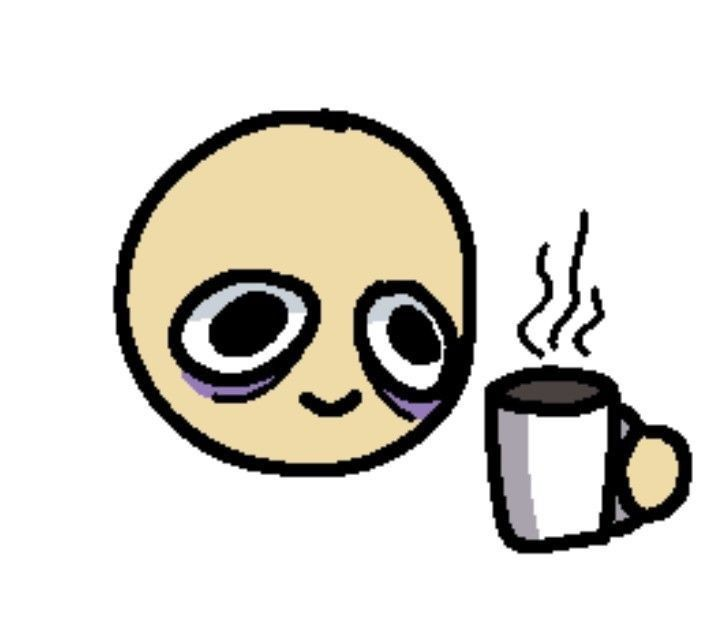

Que se debe hacer para lograr un buen trabajo final:
- Ver los videos cargados en el colaboratorio.
- Tener a mano una tabla resumen de propiedades de CSS.
- Volver a ver los videos cargados en el colaboratorio.
- Tener un michi/perrito que de apoyo moral.
- Elegir un buen compañerx para hacer el TP.
- Tener una bebida a mano, de preferencia mate, tereré, café o té.
- Ver una vez mas los videos cargados en el colaboratorio y pensar porque corno no me esta saliendo lo que
quiero hacer.
- Sentarse frente a la compu y hacer el TP, que no se hace solo.
- Llamar a mi mamá para mostrarle que linda me esta quedando la tarea.
- Quedarse horas frente a la computadora porque queres hacer algo y no te sale, pero en el video se veia
facil y hasta que no te salga no vas a dejar la compu (a pesar de estar hace 4 horas con lo mismo)
- OPCIONAL: musica o una serie de fondo, en caso que no te guste trabajar en silencio.
- Leer la pagina de referencias de Paper muchas veces para ver que mas ponerle a la pagina (aunque te guste
como se ve asi sencilla).
- Llegar a la conclusion de no meterle mas cositas.
- Ver en el Discord como otros compañerxs usan Bootstrap y ponerse mal ya que vos usaste Paper porque te
parecio mas lindo y sencillo de entender :( .
- Levantar el animo porque ya casi terminas y si esta quedando como querias.
- Abrir el inspector en la pagina de Paper para copiar el codigo del boton flechita porque me gusto.
- Estar 3 dias peleandote con la Navbar.
- Sucumbir a la desesperacion y pedirle ayuda a Chatgpt.
- Entrar en crisis porque Chatgpt tampoco te ayudo mucho.
- Dejar de tocar la Navbar porque no se ve tan mal, pero quedar insatisfechx porque no es lo que queria.
- Estar 20 min. buscando en el choclaso del css de Paper para encontrar el codigo del boton.
- Estar otros 20 min. para entender el css del boton, pero que quede lindo y sea funcional.
- Estar 3 dias peleandote con la Navbar.
- Sucumbir a la desesperacion y pedirle ayuda a Chatgpt.
- Entrar en crisis porque Chatgpt tampoco te ayudo mucho.
- Dejar de tocar la Navbar porque no se ve tan mal, pero quedar insatisfechx porque no es lo que queria.
- Dar por finalizado el trabajo.

Disclamer:casi todos los items de la lista son aplicables a la producción de cualquier trabajo.
Ahora si, sin mas items, les presento la aventura grafica: